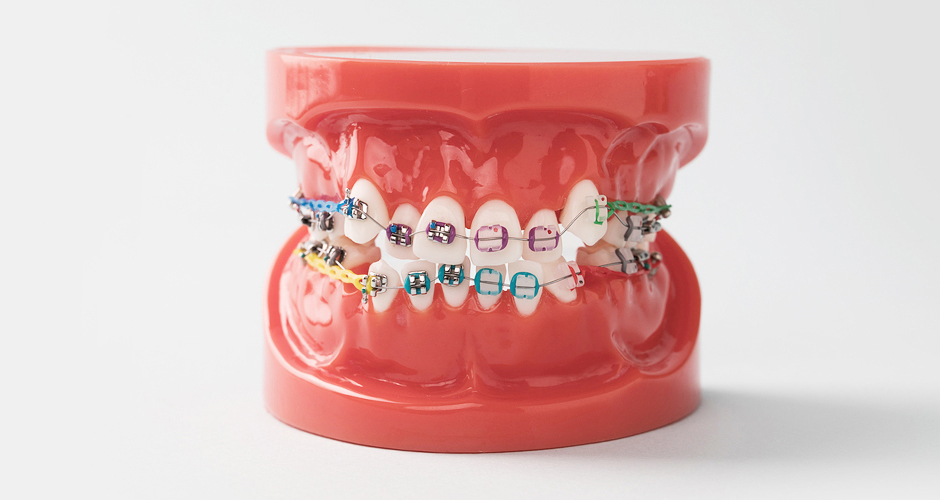
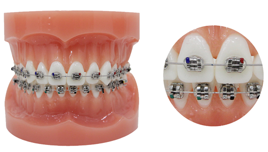
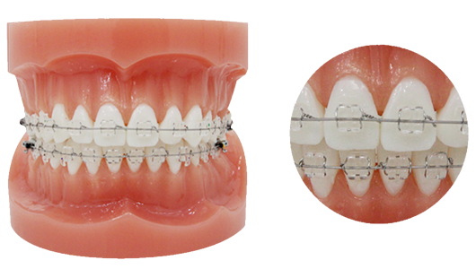
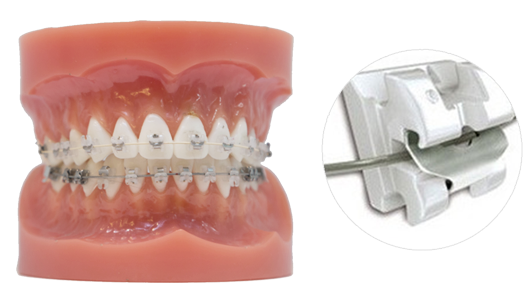
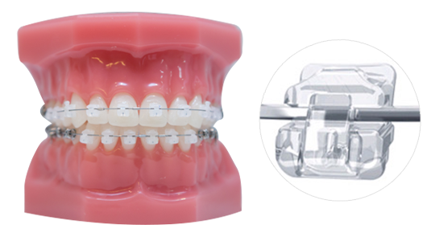
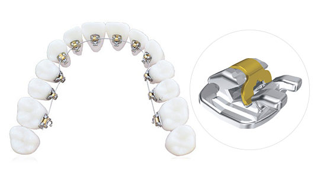
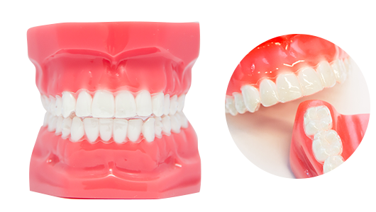

<%=m_client_en%>
<%=m_client_name%>는 다양한 종류의 브라켓을 이용하여,
환자분들께 가장 적합한 장치를 제안드리고 있습니다.
교정장치의 선택이 결과에 미치는 영향은 그리 크지 않기 때문에,
선호도와 진단결과에 따라 선택하실 수 있습니다.

스테인리스스틸 소재의 메탈 브라켓은 가볍고 튼튼하여 장치가 손상될 가능성이 적습니다.
단, 메탈 색상으로 심미성이 떨어지며 이로 인하여 웃을 때 콤플렉스가 될 수 있는 단점이 있습니다.
그럼에도 저렴하고 효율적인 교정치료를 원하는 미성년자들에게는 적합한 교정 장치가 될 수 있습니다.

치아 색상과 매우 흡사한 세라믹 브라켓은 교정 중에도 브라켓에 대한 부담을 덜 줄 수 있으며,
기능적으로도 메탈과 흡사한 기능을 가져 큰 불편 없이 알뜰한 교정을 원하는 직장인이나 학생들에게 인기 있는 교정 장치입니다.

효율적인 치아교정 방식으로 뛰어난 심미성은 물론 교정기간을 단축시켜주는 교정장치입니다.
슬라이딩 도어가 와이어를 잡아주어 철사가 자유롭게 미끄러지며
치아 이동의 마찰력을 감소시켜 빠른 진행효과를 보여줘 특히 돌출입교정이나 덧니 교정에 효과적입니다.

클리피씨와 같이 자가결찰방식 브라켓을 이용하며 슬라이딩 도어를 이용해 교정기를 고정하는 교정방법입니다.
철사나 고무줄 없이 치아 이동이 가능하며 일반 장치보다 치료기간이 빠르고 통증이 적습니다.
클리피씨는 클립 부분이 메탈색상인데 비해 데이몬클리어는 모두 치아색과 흡사한 색상으로 되어 있어 심미적으로 우수합니다.

설측 교정장치는 치아 안쪽으로 장치를 붙여서 밖에서는 전혀 보이지 않습니다.
과거에 설측교정장치는 좁은 공간에서 작동해야 하므로 효율성이 떨어져서 치료기간이 오래 걸리는 단점이 있었지만
자가결찰 장치, 클리피엘이 도입되어 보다 빠른 시간에 보이지 않게 교정치료가 가능합니다.

치아에 끼었다 뺐다 하는 탈부착이 가능한 투명교정장치로 교정을 진행하는 방법으로
육안으로 눈에 잘 띄지 않아 심미적으로 우수하여 중요한 사람을 만나거나 면접을 보는 경우
잠시 빼 두었다가 재 착용함으로써 티안나는 교정을 원하시는 분들이 많이 선택하시는 교정방법입니다.
